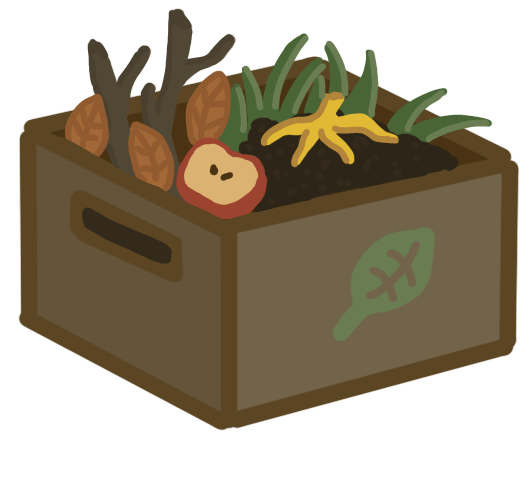

Compost is organic material that can be utilized for gardening or donated to local organizations. Composting helps us keep food waste out of landfills where they would contribute to greenhouse gases.
There are three types of composting material:
- Browns: dead leaves, branches, and twigs.
- Greens: grass clippings, vegetable waste, fruit scraps, and coffee grounds.
- Water: having the right proportions of water, greens, and browns is important for compost development.

What if I don't use soil at home?
- Many organizations take compost donations from local community members.
- You can easily look for places accepting these donations by searching for "compost drop off locations near me" on the internet.
- When donating compost, make sure to read about any specifc guidelines that the organization might have for donations.
- If you can't find any organizations near you, ask neighbors and friends who might own backyard gardens.
Read more to find out...